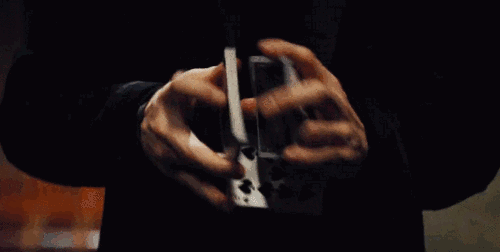
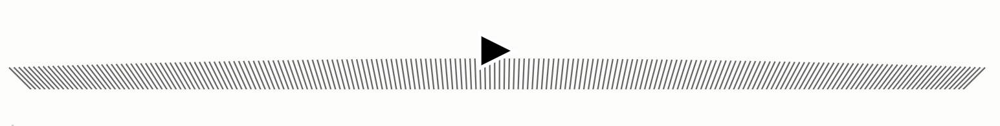
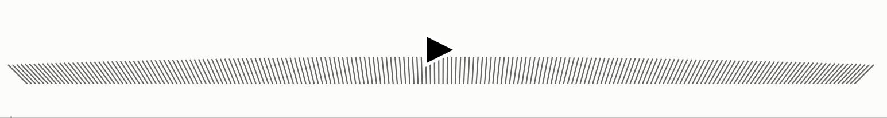

【JS-task03】洗牌算法具体指的是什么？
小课堂【武汉小课堂】
分享人：严泽浩
目录
1.背景介绍
2.知识剖析
3.常见问题
4.解决方案
5.编码实战
6.扩展思考
7.参考文献
8.更多讨论
1.背景介绍
洗牌算法具体指的是什么？
从字面意义上讲,就是实现洗牌的具体方法, 洗牌的目的是什么呢?在不考虑出老千的情况下,洗过的牌要足够乱才好,牌面随机分布,越乱越好! 在科研,计算机科学等很多领域都需要运用到概率分布的随机性, 所以说洗牌算法本质上是把一个给定元素集合打乱成为一个无序元素集合
2.知识剖析
Fisher–Yates shuffle 洗牌算法概述
简单来说 Fisher–Yates shuffle 算法是一个用来将一个有限集合生成一个随机排列的算法（数组随机排序）。 这个算法生成的随机排列是等概率的,同时这个算法非常高效。 这是一个正确且高效的算法,在我们需要解决概率分布的随机性问题时,用这个就对了!(秒天秒地秒空气)
Fisher and Yates 的原始版
Fisher–Yates shuffle 的原始版本， 最初描述在 1938 年的 Ronald Fisher 和 Frank Yates 写的书中， 他们使用纸和笔去描述了这个算法，并使用了一个随机数表来提供随机数。 它给出了 1 到 N 的数字的的随机排列，具体步骤如下：
- 写下从 1 到 N 的数字
- 取一个从 1 到剩下的数字（包括这个数字）的随机数 k
- 从低位开始，得到第 k 个数字（这个数字还没有被取出），把它写在独立的一个列表的最后一位
- 重复第 2 步，直到所有的数字都被取出
- 第 3 步写出的这个序列，现在就是原始数字的随机排列
第一次玩牌
注意:已经证明如果第 2 步取出的数字是真随机的，那么最后得到的排序一定也是。
效果示意
数学证明
Knuth-Durstenfeld-Shuffle算法
改动原因
Fisher and Yates 的原始版是由自然语言描述的,他默认了人类不会选择自己已经选过的牌,
然而计算机并没有这么聪明,计算机对于选过的牌是没有概念的,你必须告诉它如何处理这种情况,
否则它会重复选择,随着剩余元素的减少,它的效率会越来越低
到最后这种方法捞一张牌上来无疑是大海捞针
所以我们需要针对计算机做出进一步的优化
Knuth 和 Durstenfeld 在Fisher 等人的基础上对算法进行了改进， 在原始数组上对数字进行交互，减小了空间复杂度 该算法的基本思想和 Fisher 类似，每次从未处理的数据中随机取出一个数字， 然后把该数字放在数组的尾部，即数组尾部存放的是已经处理过的数字
- 写下从 1 到 N 的数字
- 取一个从 1 到剩下的数字（包括这个数字）的随机数 k
- 从低位开始，从未处理的数据中得到第 k 个数字（这个数字还没有被取出），把它与当前未取出数列的最后一位数字进行交换
- 重复第 2 步，直到所有的数字都被交换
- 第 3 步将取出的数进行循环交换,直到所以数都交换了一边,得到了一个随机排列的数组
再次玩牌
效果示意
Fisher–Yates shuffle变体:Inside-Out Algorithm算法
各有优劣
Knuth-Durstenfeld Shuffle 是一个内部打乱的算法，算法完成后原始数据被直接打乱，
尽管这个方法可以节省空间，但在有些应用中可能需要保留原始数据，所以需要另外开辟一个数组来存储生成的新序列。
Inside-Out Algorithm 算法的基本思想是从前向后扫描数据，
把位置i的数据随机插入到第i个（包括第i个）位置中（假设为k），这个操作是在新数组中进行，
然后把原始数据中位置k的数字替换新数组位置i的数字。其实效果相当于新数组中位置k和位置i的数字进行交互。
再次玩牌
效果示意
Fisher–Yates shuffle的变体:Sattolo算法
Sandra Sattolo于1986年发布了一种非常相似的算法 当打算使用普通的Fisher-Yates shuffle时，很容易不经意间就实现了Sattolo算法
核心思想和Fisher–Yates shuffle算法完全一致, 区别在于:在原始数组上对数字进行交互，减小了空间复杂度 每次从未处理的数据中随机取出一个数字， 然后把该数字放在整个数组的尾部，即数组尾部存放的是已经处理过的数字, 具体步骤如下：
- 写下从 1 到 N 的数字
- 取一个从 1 到剩下的数字（包括这个数字）的随机数 k
- 从低位开始，从未处理的数据中得到第 k 个数字（这个数字还没有被取出），把它写在当前列表的最后一位
- 重复第 2 步，直到所有的数字都被取出
- 第 3 步在当前序列的基础上,改造成了一个随机排列的数列
再次玩牌
效果示意
3.常见问题
问题1:如何评判一个洗牌算法的优劣
4.解决方案
评判一个洗牌算法优劣的标准有哪些?
- 算法必须是正确的,可以使用数学方法证明其正确性
- 算法应该是友好的，便于人们理解和交流，并且是机器可执行的
- 算法需要足够健壮，即当输入的数据非法或不合理时，也能适当的做出正确的反应或进行相应的处理
核心概念:算法复杂度
算法复杂度是指算法在编写成可执行程序后，运行时所需要的资源，资源包括时间资源和内存资源。
时间复杂度是指执行算法所需要的计算工作量
- 最优时间复杂度 (Best-Case)
- 平均时间复杂度 (Average-Case)
- 最差时间复杂度 (Worst-Case)
空间复杂度是指执行这个算法所需要的内存空间
- 算法程序所占的空间；
- 输入的初始数据所占的存储空间；
- 算法执行过程中所需要的额外空间。
5.编码实战
6.扩展思考
问题一:由计算机生成的随机数满足概率分布的随机性吗?
伪随机数的概念
伪随机数是用确定性的算法计算出来的似来自[0,1]均匀分布的随机数序列。 并不真正的随机，但具有类似于随机数的统计特征，如均匀性、独立性等。 在计算伪随机数时，若使用的初值（种子）不变，那么伪随机数的数序也不变。 伪随机数可以用计算机大量生成，在模拟研究中为了提高模拟效率，一般采用伪随机数代替真正的随机数。 模拟中使用的一般是循环周期极长并能通过随机数检验的伪随机数，以保证计算结果的随机性。
伪随机数的生成方法主要有以下3种：
- 直接法（Direct Method）根据分布函数的物理意义生成。缺点是仅适用于某些具有特殊分布的随机数，如二项式分布、泊松分布。
- 逆转法（Inversion Method）该方法原理简单、编程方便、适用性广。伪随机数生成器（PRNG）一般采用逆转法，其基础是均匀分布
- 接受拒绝法（Acceptance-Rejection Method）
7.参考文献
参考二：Fisher–Yates shuffle From Wikipedia
8.更多讨论
伪随机?真随机?宇宙中是否存在真正的随机?
鸣谢
感谢大家观看
BY : 严泽浩